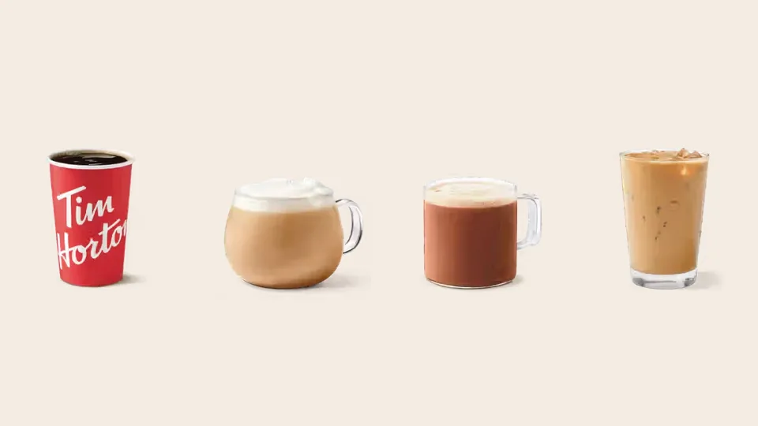

Unofficial fan guide - not affiliated with Tim Hortons
Tims is cheaper and everywhere. Second Cup is a café with richer drinks and free non-dairy milk. Here is the full comparison.
Full Menu / Blog / Tim Hortons vs Second Cup

Tim Hortons is cheaper, faster and much easier to find, with about 3,900 Canadian restaurants. Second Cup is a café-style chain with around 180 locations, richer specialty drinks and free non-dairy milk. In a 2026 taste test, a small Second Cup latte cost $5.46 after tax, compared with $3.67 at Tim Hortons.
Tim Hortons and Second Cup are both Canadian originals. Tim Hortons opened in Hamilton, Ontario, in 1964 and grew into the country's biggest coffee chain. Second Cup opened in a Toronto shopping mall in August 1975, selling six whole-bean coffee blends, and turned 50 in 2025.
They aim at different customers. Tim Hortons sells a fast, low-priced coffee and a donut. Second Cup sells a sit-down café visit at a price closer to Starbucks. This comparison uses our own Tim Hortons menu prices (Canadian dollars, before tax, October 2026) and three Narcity taste tests from 2025 and 2026, in which one tester bought the same drink at both chains.
| Tim Hortons | Second Cup | |
|---|---|---|
| Founded | 1964, Hamilton, Ontario | 1975, Toronto, Ontario |
| Owner | Restaurant Brands International | Foodtastic (since 2021) |
| Locations in Canada | About 3,900 | About 180 (179th opened June 2025) |
| Style | Quick service, mostly drive-thru | Café, with kiosks in transit hubs and offices |
| House coffee | Original Blend, medium roast | Paradiso, medium roast |
| Beans | 100% Arabica | 100% Arabica, Rainforest Alliance Certified (Paradiso) |
| Small latte, as tested | $3.67 after tax | $5.46 after tax |
| Non-dairy milk | Oat, soy and almond | Almond, coconut, soy and oat, at no extra charge |
| Rewards | Tims Rewards, 10 points per $1 | Second Cup rewards, 10 points per $1 |
| Donuts | Yes, plus Timbits | No |
| Best for | Price, speed, breakfast | Specialty drinks, dairy-free orders, sitting in |
Tim Hortons is cheaper on every drink we could match. Second Cup does not publish a national price list, so the fairest comparison is what one person paid for the same drink at both chains. Narcity ran that test three times, and Second Cup cost more each time.
| Same drink, same tester | Tim Hortons | Second Cup | Second Cup costs |
|---|---|---|---|
| Small latte (January 2026) | $3.67 | $5.46 | 49% more |
| Medium hot chocolate (winter 2025-26) | $2.93 | $5.59 | 91% more |
| Small iced coffee (September 2026) | $2.49 | $5.75 | 131% more |
| All three | $9.09 | $16.80 | 85% more |
The percentages are our own calculation from the prices Narcity's writers reported. The latte prices include tax. Those three drinks cost $7.71 more at Second Cup. If you buy one latte every weekday, the $1.79 gap adds up to about $465 over 260 workdays.
Our own Tim Hortons menu prices line up with the test. A small latte is listed at $3.19 before tax, a medium hot chocolate at $2.69 and a small Original Iced Coffee at $2.29. Brewed coffee starts at $1.59 for a small. See the full Tim Hortons coffee menu for every size.
Second Cup prices itself as a specialty café, not a quick-service counter. The franchise guide L'Express Franchise describes it as sitting between Tim Hortons' low prices and Starbucks' premium global brand. Narcity's tests fit that description: Second Cup's small latte cost 11 cents more than a Starbucks tall ($5.35).
You also pay for the room. Second Cup franchises are cafés with seating, and a new one costs a franchisee $550,000 to $650,000 to open, according to the same guide. Tim Hortons runs on volume, with most orders going through a drive-thru.
It depends on the drink. Tim Hortons won Narcity's latte test and its overall coffee chain ranking, and Second Cup won the hot chocolate test. Across the three tests, price hurt Second Cup's scores more than flavour did.
Tim Hortons made the better latte in Narcity's January 2026 ranking of Canada's biggest coffee chains. Writer Morgan Leet praised its "nice foam on top" and "great temperature." Second Cup finished "right behind Tim Hortons with a solid latte," but Leet called it "a little more bland overall" and noted the jump in price. Starbucks came third.
Second Cup made the best hot chocolate. Narcity's Tomás Keating gave it 5/5 and called it "incredibly creamy" and "one of the best cups of hot chocolate I've ever had." Tim Hortons scored 4.5/5 for a cup he called "genuinely delicious," at close to half the price. If you want a treat, Second Cup wins. If you want value, the Tims cup is nearly as good.
Tim Hortons won on iced coffee, mostly because of price. In September 2026, Narcity's Lauren DiBenedetto ranked Tim Hortons first of four chains with a 5/5 and called it "well-priced, reliable and ridiculously convenient." Second Cup placed third with 2.5/5. She liked that it was Canadian and liked its breakfast sandwiches, but wrote that "the price is wild" for a $5.75 small iced coffee.
Both chains brew 100% Arabica beans at a medium roast. Tim Hortons serves its Original Blend, which is blended and roasted in Canada, alongside a Dark Roast and a decaf. Second Cup's signature blend is Paradiso, a medium roast that its retail bags describe as smooth and clean, with fruit notes and a wine-like sweetness.
Paradiso carries the Rainforest Alliance Certified seal on its retail packaging. Second Cup began as a whole-bean seller in 1975, and bags of Paradiso are still sold at retailers such as Canadian Tire and Staples. Tim Hortons sells its Original Blend in grocery stores too. Our guide to Tim Hortons coffee beans covers bag sizes and prices.
Tim Hortons has the bigger menu overall, and Second Cup has the more unusual drinks. The difference shows most in food.
Second Cup's drink menu is built around espresso. It lists espressos, lattes, cappuccinos, cold brews and frappés, plus seasonal drinks. Its spring 2025 lineup included a Nanaimo Bar Flash Cold Brew, a Campfire Mocca Frappé and an iced matcha with strawberry rose cold foam.
Tim Hortons covers the same basics for less: brewed coffee, lattes, cappuccinos, Americanos, cold brew and iced coffee. It adds drinks Second Cup has no match for, such as the Iced Capp and the French Vanilla. It also launched its own matcha lattes in July 2026. Our best Tim Hortons drinks guide ranks them.
Tim Hortons wins on food by a wide margin. It sells a full donut and Timbits lineup, breakfast sandwiches and wraps, soup, and lunch sandwiches. Second Cup sells pastries, baked goods and sandwiches. Narcity's DiBenedetto praised its breakfast options but wrote that "the menu gets pretty small pretty quickly."
No. Second Cup removed its non-dairy surcharge at every café in Canada on February 27, 2025. Almond, coconut, soy and oat milk, plus lactose-free 2% and skim milk, now cost the same as regular milk. Before the change, Second Cup charged 80 cents for a dairy alternative.
Tim Hortons offers oat, soy and almond milk in Canada. We could not find a matching no-surcharge announcement from Tim Hortons, so check the price in the app before you pay. Some Tims drinks, including the French Vanilla and Hot Chocolate, are made from mixes that contain dairy whatever milk you choose. Our guide to ordering at Tim Hortons explains which drinks can be made dairy-free.
Both programs give you 10 points for every dollar you spend, but Second Cup's free coffee arrives sooner. A small brewed coffee or tea costs 250 points at Second Cup, which is $25 of spending. At Tim Hortons, a brewed coffee costs 400 points, or $40 of spending.
| Tims Rewards | Second Cup rewards | |
|---|---|---|
| Points earned | 10 per $1 | 10 per $1, before tax |
| First reward | 300 points (hash brown or classic donut) | 250 points (small brewed coffee or tea) |
| Free brewed coffee | 400 points | 250 points (small) |
| Points expire | 12 months after the month earned | 6 months after the month earned |
There is a catch. Second Cup's points expire after six months, and Tims points last twelve. Second Cup's 500-point level covers a medium standard drink, and 1,000 points covers a medium espresso drink, hot chocolate or smoothie. The Second Cup figures come from Milesopedia's program guide, so confirm them in the app. Our Tim Hortons app guide explains Tims Rewards.
Tim Hortons has about 3,900 restaurants in Canada, and Second Cup has about 180. Second Cup opened its 179th Canadian café in June 2025, a kiosk at the Kipling GO bus terminal in Toronto. That is roughly one Second Cup for every 22 Tim Hortons.
The two chains also build in different places. Tim Hortons is in almost every town and on most highways, usually with a drive-thru. Second Cup said in 2025 that it had more than 20 new cafés planned for transit hubs, office complexes and mixed-use developments. About 38 of its cafés are in Quebec. See how many Tim Hortons there are in Canada for the count by province.
Different companies own them, and both owners are Canadian. Tim Hortons belongs to Restaurant Brands International, the Toronto-based company created in 2014 when Tim Hortons merged with Burger King. Our who owns Tim Hortons guide has the full history.
Second Cup belongs to Foodtastic, a Montreal-based restaurant franchisor. Foodtastic agreed to buy the chain from Aegis Brands in February 2021 for $14 million in cash plus an earn-out, when Second Cup had 190 cafés. Foodtastic now runs more than 1,200 restaurants, and it is also the company bringing Dunkin' back to Canada.
Comparing Tims with other chains? See Tim Hortons vs Starbucks, Tim Hortons vs McDonald's coffee and Tim Hortons vs A&W breakfast.
Yes. In three Narcity tests in 2025 and 2026, the same drink cost 49% to 131% more at Second Cup. A small latte was $5.46 after tax at Second Cup and $3.67 at Tim Hortons.
It depends on the drink. Narcity ranked the Tim Hortons latte ahead of Second Cup's in January 2026, but gave Second Cup's hot chocolate a perfect 5/5. Both chains brew 100% Arabica coffee at a medium roast.
Yes. Second Cup was founded in Toronto in 1975 by Tom Culligan and Frank O'Dea. It has been owned by Foodtastic, a Montreal-based restaurant company, since 2021.
No. Tim Hortons is owned by Restaurant Brands International, and Second Cup is owned by Foodtastic. The two chains are competitors with no shared ownership.
About 180. Second Cup opened its 179th Canadian café in June 2025 and said it had more than 20 new locations planned. Tim Hortons has about 3,900 restaurants in Canada.
Some locations do, but most are walk-in cafés or kiosks. When Foodtastic bought the chain in 2021, it said new cafés would focus on suburban, high-traffic sites with drive-thrus. Most Tim Hortons restaurants have one.
No. Second Cup sells pastries, baked goods and sandwiches, but not donuts. Tim Hortons sells a full donut lineup and Timbits.
Paradiso is Second Cup's signature blend. It is a medium roast made from 100% Arabica beans, and its retail bags carry the Rainforest Alliance Certified seal.
Yes. Second Cup's rewards program gives 10 points for every dollar spent before tax. A small brewed coffee or tea costs 250 points, and points expire six months after the month you earned them.
Not always. In Narcity's January 2026 latte test, a small Second Cup latte cost $5.46 after tax and a Starbucks tall cost $5.35. Prices at both chains vary by location.
Tim Hortons is older. It opened in Hamilton, Ontario, in 1964, eleven years before Second Cup opened in Toronto in 1975.
This is an independent, unofficial guide. It is not affiliated with, endorsed by, or sponsored by Tim Hortons, Restaurant Brands International, Second Cup or Foodtastic. Tim Hortons prices come from our menu pages (Canadian dollars, before tax, as of October 2026). Second Cup does not publish a national price list, so its prices are what Narcity testers paid in 2025 and 2026 and will vary by café. See Sources.